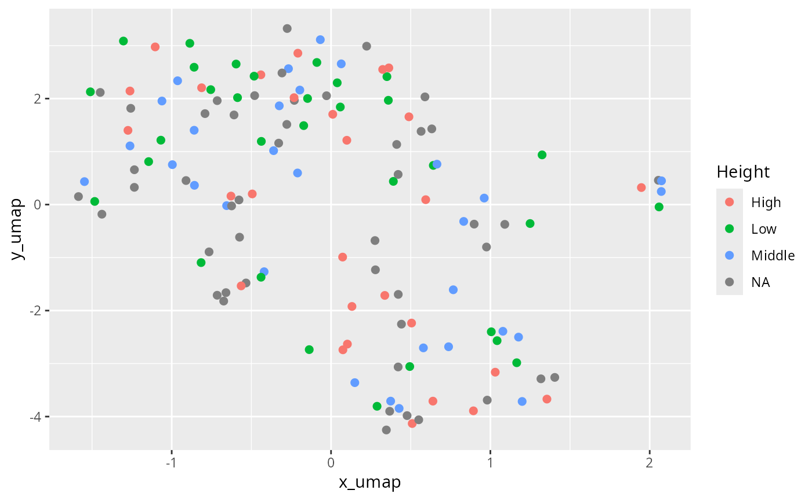

Computes a manifold approximation and projection (UMAP) for phyloseq object
Source:R/plot_functions.R
umap_pq.Rd
https://journals.asm.org/doi/full/10.1128/msystems.00691-21
Arguments
- physeq
(required): a
phyloseq-classobject obtained using thephyloseqpackage.- pkg
Which R packages to use, either "umap" or "uwot".
- ...
Additional arguments passed on to
umap::umap()oruwot::umap2()function. For examplen_neighborsset the number of nearest neighbors (Default 15). Seeumap::umap.defaults()oruwot::umap2()for the list of parameters and default values.
Details
This function is mainly a wrapper of the work of others.
Please make a reference to umap::umap() if you
use this function.
Examples
library("umap")
df_umap <- umap_pq(data_fungi_mini)
#> Taxa are now in columns.
#> Taxa are now in rows.
#> Joining with `by = join_by(Sample)`
#> Warning: The `x` argument of `as_tibble.matrix()` must have unique column names if
#> `.name_repair` is omitted as of tibble 2.0.0.
#> ℹ Using compatibility `.name_repair`.
#> ℹ The deprecated feature was likely used in the MiscMetabar package.
#> Please report the issue at
#> <https://github.com/adrientaudiere/MiscMetabar/issues>.
#> Joining with `by = join_by(Sample)`
ggplot(df_umap, aes(x = x_umap, y = y_umap, col = Height)) +
geom_point(size = 2)

# library(patchwork)
# physeq <- data_fungi_mini
# res_tsne <- tsne_pq(data_fungi_mini)
# df_umap_tsne <- df_umap
# df_umap_tsne$x_tsne <- res_tsne$Y[, 1]
# df_umap_tsne$y_tsne <- res_tsne$Y[, 2]
# ((ggplot(df_umap, aes(x = x_umap, y = y_umap, col = Height)) +
# geom_point(size = 2) +
# ggtitle("UMAP")) + (plot_ordination(physeq,
# ordination =
# ordinate(physeq, method = "PCoA", distance = "bray"), color = "Height"
# )) +
# ggtitle("PCoA")) /
# ((ggplot(df_umap_tsne, aes(x = x_tsne, y = y_tsne, col = Height)) +
# geom_point(size = 2) +
# ggtitle("tsne")) +
# (plot_ordination(physeq,
# ordination = ordinate(physeq, method = "NMDS", distance = "bray"),
# color = "Height"
# ) +
# ggtitle("NMDS"))) +
# patchwork::plot_layout(guides = "collect")
# df_uwot <- umap_pq(data_fungi_mini, pkg = "uwot")
# (ggplot(df_umap, aes(x = x_umap, y = y_umap, col = Height)) +
# geom_point(size = 2) +
# ggtitle("umap::umap")) /
# (ggplot(df_uwot, aes(x = x_umap, y = y_umap, col = Height)) +
# geom_point(size = 2) +
# ggtitle("uwot::umap2"))